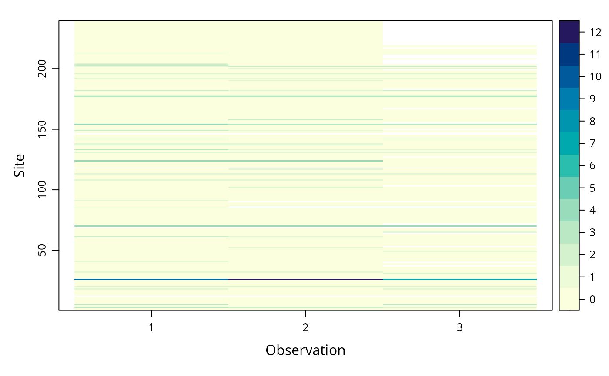

unmarkedFrame-class.RdMethods for manipulating, summarizing and viewing unmarkedFrames
Objects can be created by calls to the constructor function
unmarkedFrame. These objects are passed to the data
argument of the fitting functions.
y:Object of class "matrix"
obsCovs:Object of class "optionalDataFrame"
siteCovs:Object of class "optionalDataFrame"
mapInfo:Object of class "optionalMapInfo"
obsToY:Object of class "optionalMatrix"
signature(x = "unmarkedFrame", i = "numeric", j =
"missing", drop = "missing"): ...
signature(x = "unmarkedFrame", i = "numeric", j =
"numeric", drop = "missing"): ...
signature(x = "unmarkedFrame", i = "missing", j =
"numeric", drop = "missing"): ...
signature(object = "unmarkedFrame"): extract
coordinates
signature(object = "unmarkedFrame"): extract y
matrix
signature(object = "unmarkedFrame"): extract M
signature(object = "unmarkedFrame"): extract
ncol(y)
signature(object = "unmarkedFrame"): extract
observation-level covariates
signature(object = "unmarkedFrame"): add or
modify observation-level covariates
signature(object = "unmarkedFrame"): extract
number of observations
signature(object = "unmarkedFrame"):
signature(object = "unmarkedFrame"): ...
signature(x = "unmarkedFrame", y = "missing"):
visualize response variable.
Takes additional argument panels which specifies how many
panels data should be split over.
signature(object = "unmarkedFrame"): extract
projection information
signature(object = "unmarkedFrame"): view data as
data.frame
signature(object = "unmarkedFrame"): extract
site-level covariates
signature(object = "unmarkedFrame"): add or
modify site-level covariates
signature(object = "unmarkedFrame"): summarize
data
signature(object = "unmarkedFrameOccuCOP"): extract L
This is a superclass with child classes for each fitting function.
# List all the child classes of unmarkedFrame
showClass("unmarkedFrame")
#> Class "unmarkedFrame" [package "unmarked"]
#>
#> Slots:
#>
#> Name: y obsCovs siteCovs mapInfo
#> Class: matrix optionalDataFrame optionalDataFrame optionalMapInfo
#>
#> Name: obsToY
#> Class: optionalMatrix
#>
#> Extends: "unmarkedFrameOrNULL"
#>
#> Known Subclasses:
#> Class "unmarkedMultFrame", directly
#> Class "unmarkedFrameDS", directly
#> Class "unmarkedFrameOccu", directly
#> Class "unmarkedFrameOccuFP", directly
#> Class "unmarkedFrameOccuMulti", directly
#> Class "unmarkedFramePCount", directly
#> Class "unmarkedFrameMPois", directly
#> Class "unmarkedFrameOccuCOP", directly
#> Class "unmarkedFrameOccuMS", by class "unmarkedMultFrame", distance 2
#> Class "unmarkedFrameOccuTTD", by class "unmarkedMultFrame", distance 2
#> Class "unmarkedFrameG3", by class "unmarkedMultFrame", distance 2
#> Class "unmarkedFramePCO", by class "unmarkedMultFrame", distance 2
#> Class "unmarkedFrameGDR", by class "unmarkedMultFrame", distance 2
#> Class "unmarkedFrameGMM", by class "unmarkedMultFrame", distance 3
#> Class "unmarkedFrameGDS", by class "unmarkedMultFrame", distance 3
#> Class "unmarkedFrameGPC", by class "unmarkedMultFrame", distance 3
#> Class "unmarkedFrameGOccu", by class "unmarkedMultFrame", distance 3
#> Class "unmarkedFrameMMO", by class "unmarkedMultFrame", distance 4
#> Class "unmarkedFrameDSO", by class "unmarkedMultFrame", distance 4
# Organize data for pcount()
data(mallard)
mallardUMF <- unmarkedFramePCount(mallard.y, siteCovs = mallard.site,
obsCovs = mallard.obs)
# Vizualize it
plot(mallardUMF)

mallardUMF
#> Data frame representation of unmarkedFrame object.
#> y.1 y.2 y.3 elev length forest ivel.1 ivel.2 ivel.3 date.1 date.2 date.3
#> 1 0 0 0 -1.173 0.801 -1.156 -0.506 -0.506 -0.506 -1.761 0.310 1.381
#> 2 0 0 0 -1.127 0.115 -0.501 -0.934 -0.991 -1.162 -2.904 -1.047 0.596
#> 3 3 2 1 -0.198 -0.479 -0.101 -1.136 -1.339 -1.610 -1.690 -0.476 1.453
#> 4 0 0 0 -0.105 0.315 0.008 -0.819 -0.927 -1.197 -2.190 -0.690 1.239
#> [ reached 'max' / getOption("max.print") -- omitted 235 rows ]
# Summarize it
summary(mallardUMF)
#> unmarkedFrame Object
#>
#> 239 sites
#> Maximum number of observations per site: 3
#> Mean number of observations per site: 2.76
#> Sites with at least one detection: 40
#>
#> Tabulation of y observations:
#> 0 1 2 3 4 7 10 12 <NA>
#> 576 54 11 9 6 1 1 1 58
#>
#> Site-level covariates:
#> elev length forest
#> Min. :-1.436000 Min. :-4.945000 Min. :-1.2650000
#> 1st Qu.:-0.956500 1st Qu.:-0.563000 1st Qu.:-0.9560000
#> Median :-0.198000 Median : 0.045000 Median :-0.0650000
#> Mean :-0.000046 Mean :-0.000029 Mean : 0.0000669
#> 3rd Qu.: 0.994000 3rd Qu.: 0.626000 3rd Qu.: 0.7900000
#> Max. : 2.434000 Max. : 2.255000 Max. : 2.2990000
#>
#> Observation-level covariates:
#> ivel date
#> Min. :-1.75300 Min. :-2.90400
#> 1st Qu.:-0.66600 1st Qu.:-1.11900
#> Median :-0.13900 Median :-0.11900
#> Mean : 0.00002 Mean : 0.00007
#> 3rd Qu.: 0.54900 3rd Qu.: 1.31000
#> Max. : 5.98000 Max. : 3.81000
#> NA's :52 NA's :42
str(mallardUMF)
#> Formal class 'unmarkedFramePCount' [package "unmarked"] with 5 slots
#> ..@ y : num [1:239, 1:3] 0 0 3 0 3 0 0 0 0 0 ...
#> .. ..- attr(*, "dimnames")=List of 2
#> .. .. ..$ : NULL
#> .. .. ..$ : chr [1:3] "y.1" "y.2" "y.3"
#> ..@ obsCovs :'data.frame': 717 obs. of 2 variables:
#> .. ..$ ivel: num [1:717] -0.506 -0.506 -0.506 -0.934 -0.991 ...
#> .. ..$ date: num [1:717] -1.76 0.31 1.38 -2.9 -1.05 ...
#> ..@ siteCovs:'data.frame': 239 obs. of 3 variables:
#> .. ..$ elev : num [1:239] -1.173 -1.127 -0.198 -0.105 -1.034 ...
#> .. ..$ length: num [1:239] 0.801 0.115 -0.479 0.315 -1.102 ...
#> .. ..$ forest: num [1:239] -1.156 -0.501 -0.101 0.008 -1.193 ...
#> ..@ mapInfo : NULL
#> ..@ obsToY : num [1:3, 1:3] 1 0 0 0 1 0 0 0 1
numSites(mallardUMF)
#> [1] 239
numY(mallardUMF)
#> [1] 3
obsNum(mallardUMF)
#> [1] 3
# Extract components of data
getY(mallardUMF)
#> y.1 y.2 y.3
#> [1,] 0 0 0
#> [2,] 0 0 0
#> [3,] 3 2 1
#> [4,] 0 0 0
#> [5,] 3 0 3
#> [6,] 0 0 0
#> [7,] 0 0 0
#> [8,] 0 0 0
#> [9,] 0 0 0
#> [10,] 0 0 0
#> [11,] 0 0 0
#> [12,] NA NA NA
#> [13,] 0 0 0
#> [14,] 0 0 0
#> [15,] 0 0 0
#> [16,] 0 0 0
#> [ reached getOption("max.print") -- omitted 223 rows ]
obsCovs(mallardUMF)
#> ivel date
#> 1 -0.506 -1.761
#> 2 -0.506 0.310
#> 3 -0.506 1.381
#> 4 -0.934 -2.904
#> 5 -0.991 -1.047
#> 6 -1.162 0.596
#> 7 -1.136 -1.690
#> 8 -1.339 -0.476
#> 9 -1.610 1.453
#> 10 -0.819 -2.190
#> 11 -0.927 -0.690
#> 12 -1.197 1.239
#> 13 0.638 -1.833
#> 14 0.880 0.167
#> 15 1.042 1.381
#> 16 -1.329 -2.619
#> 17 -1.042 0.167
#> 18 -0.899 1.381
#> 19 -1.448 -2.690
#> 20 -1.562 -1.190
#> 21 -1.676 1.596
#> 22 -0.321 -2.119
#> 23 -0.557 -0.476
#> 24 -0.636 1.453
#> 25 -0.231 -2.047
#> [ reached 'max' / getOption("max.print") -- omitted 692 rows ]
obsCovs(mallardUMF, matrices = TRUE)
#> $ivel
#> [,1] [,2] [,3]
#> [1,] -0.506 -0.506 -0.506
#> [2,] -0.934 -0.991 -1.162
#> [3,] -1.136 -1.339 -1.610
#> [4,] -0.819 -0.927 -1.197
#> [5,] 0.638 0.880 1.042
#> [6,] -1.329 -1.042 -0.899
#> [7,] -1.448 -1.562 -1.676
#> [8,] -0.321 -0.557 -0.636
#> [9,] -0.231 -0.231 -0.001
#> [10,] -1.097 -1.021 -0.832
#> [11,] -0.224 0.058 -0.224
#> [12,] NA NA NA
#> [13,] 0.417 0.284 0.549
#> [14,] -1.354 -1.014 -1.159
#> [15,] -1.117 -0.224 -0.788
#> [16,] -0.278 -0.182 0.009
#> [ reached getOption("max.print") -- omitted 223 rows ]
#>
#> $date
#> [,1] [,2] [,3]
#> [1,] -1.761 0.310 1.381
#> [2,] -2.904 -1.047 0.596
#> [3,] -1.690 -0.476 1.453
#> [4,] -2.190 -0.690 1.239
#> [5,] -1.833 0.167 1.381
#> [6,] -2.619 0.167 1.381
#> [7,] -2.690 -1.190 1.596
#> [8,] -2.119 -0.476 1.453
#> [9,] -2.047 -0.547 1.167
#> [10,] -2.333 -1.119 -0.261
#> [11,] -1.690 0.453 1.453
#> [12,] -1.047 0.739 2.596
#> [13,] -1.833 -0.333 1.953
#> [14,] -0.904 1.096 1.239
#> [15,] -2.547 -0.261 1.310
#> [16,] -1.333 0.310 1.524
#> [ reached getOption("max.print") -- omitted 223 rows ]
#>
siteCovs(mallardUMF)
#> elev length forest
#> 1 -1.173 0.801 -1.156
#> 2 -1.127 0.115 -0.501
#> 3 -0.198 -0.479 -0.101
#> 4 -0.105 0.315 0.008
#> 5 -1.034 -1.102 -1.193
#> 6 -0.848 0.741 0.917
#> 7 -0.910 0.115 -1.083
#> 8 -1.003 -1.007 -0.792
#> 9 -0.058 -0.913 0.553
#> 10 -0.631 1.556 0.808
#> 11 0.066 -1.626 1.790
#> 12 -0.709 1.647 -0.720
#> 13 -1.111 -0.399 -0.647
#> 14 -0.260 0.685 0.844
#> 15 -0.647 0.801 -0.320
#> 16 0.189 0.741 -0.101
#> [ reached 'max' / getOption("max.print") -- omitted 223 rows ]
mallardUMF[1:5,] # First 5 rows in wide format
#> Data frame representation of unmarkedFrame object.
#> y.1 y.2 y.3 elev length forest ivel.1 ivel.2 ivel.3 date.1 date.2 date.3
#> 1 0 0 0 -1.173 0.801 -1.156 -0.506 -0.506 -0.506 -1.761 0.310 1.381
#> 2 0 0 0 -1.127 0.115 -0.501 -0.934 -0.991 -1.162 -2.904 -1.047 0.596
#> 3 3 2 1 -0.198 -0.479 -0.101 -1.136 -1.339 -1.610 -1.690 -0.476 1.453
#> 4 0 0 0 -0.105 0.315 0.008 -0.819 -0.927 -1.197 -2.190 -0.690 1.239
#> [ reached 'max' / getOption("max.print") -- omitted 1 rows ]
mallardUMF[,1:2] # First 2 observations
#> Data frame representation of unmarkedFrame object.
#> y.1 y.2 elev length forest ivel.1 ivel.2 date.1 date.2
#> 1 0 0 -1.173 0.801 -1.156 -0.506 -0.506 -1.761 0.310
#> 2 0 0 -1.127 0.115 -0.501 -0.934 -0.991 -2.904 -1.047
#> 3 3 2 -0.198 -0.479 -0.101 -1.136 -1.339 -1.690 -0.476
#> 4 0 0 -0.105 0.315 0.008 -0.819 -0.927 -2.190 -0.690
#> 5 3 0 -1.034 -1.102 -1.193 0.638 0.880 -1.833 0.167
#> [ reached 'max' / getOption("max.print") -- omitted 234 rows ]